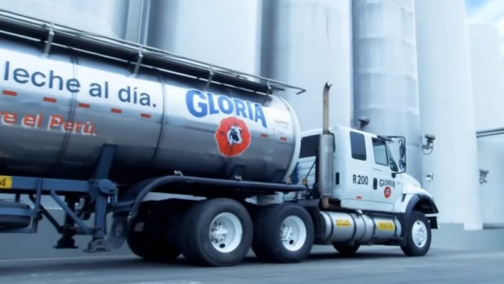

GLORIA
SOSTENIBILIDAD
NOSOTROS NOSOTROS
La empresa Leche Gloria S.A. se constituye como tal el 5 de febrero de 1941. Ese mismo año se empezó a levantar la planta en Arequipa donde hoy, gracias a una inversión de US$ 30 millones, se cuenta con la primera línea aséptica para la elaboración de productos lácteos que no necesitan refrigeración: Yofresh, Pro y Shake. Con estos lanzamientos, Gloria busca atender la demanda de productos diseñados a las necesidades de los consumidores, con la mejor calidad y nutrición. De igual forma, la Planta de Huachipa (Lima) comienza a producir el 7 de enero de 1999, convirtiéndose en la más importante del Perú y la más grande de leche evaporada del mundo. Allí también se fabrica leche UHT, leches saborizadas, yogurt, néctares, leche condensada, mantequilla, quesos y otros productos que abastecen todo el territorio. Por otro lado, en la planta de Cajamarca se elabora manjar blanco y los quesos madurados Bonlé.